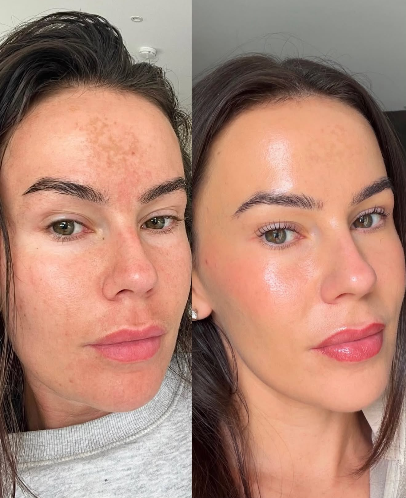
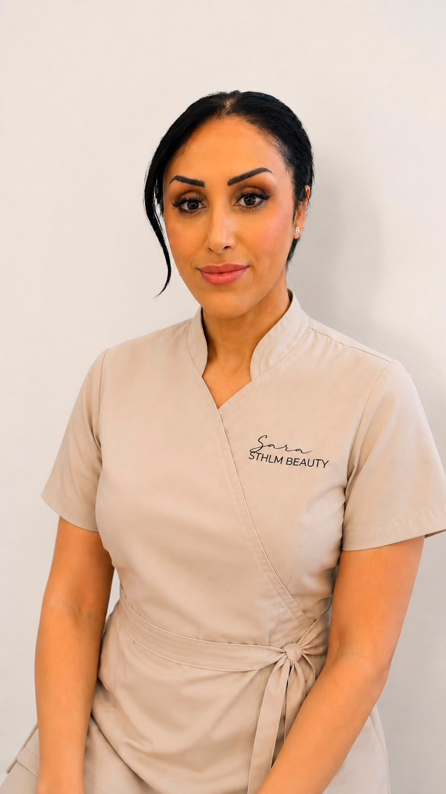

Mer lyster
Kan ge huden ett piggare och klarare intryck.
Tre hudförbättrande steg i en exklusiv behandling för mer lyster, jämnare hudstruktur och en fräschare hudkänsla.
Kampanjen slutar om
Begränsat antal tider. Kampanjpriset gäller bokningar som görs senast 31 oktober 2026.

Före EfterBehandlingen kombinerar kontrollerad microneedling med PDRN och 24K guld. Målet är att stödja hudens naturliga förnyelse och ge ett fräschare, jämnare och mer återfuktat intryck.
Kan ge huden ett piggare och klarare intryck.
Passar när du vill arbeta med grov hudstruktur, synliga porer och ojämnheter.
Kollagenstimulerande microneedling kan med tiden förbättra hudens spänst.
PDRN-formulan används för att stödja återfuktning och hudens återhämtning.
En behandlingskur kan bidra till att jämna ut ytliga ärr och märken.
Behandlingen kan ge ett mer enhetligt och vitalt helhetsintryck.
Resultat och upplevelse varierar mellan individer. Flera behandlingar kan behövas beroende på hudens utgångsläge och mål.
Klicka för att se dem större. Resultat varierar mellan individer och antal behandlingar.
Mikronålar skapar kontrollerade mikrokanaler i huden och stimulerar hudens naturliga reparationsprocess samt produktionen av kollagen och elastin.
PDRN är polynukleotider som används i avancerad hudvård för att stödja återhämtning, fuktbalans och en förbättrad hudkvalitet.
Guldkomponenten används som en lyxig, antioxidativ del av behandlingen och bidrar till en strålande och välvårdad hudkänsla.
Behandlingen anpassas efter din hud, dina mål och eventuell känslighet.
Vi går igenom hudens behov, förväntningar, kontraindikationer och eftervård.
Huden rengörs noggrant och förbereds hygieniskt inför behandlingen.
Nåldjup och intensitet anpassas efter område och hudens förutsättningar.
Serumet arbetas in i samband med behandlingen för optimal kontakt med huden.
Huden får ett lugnande och skyddande avslut samt individuella eftervårdsråd.
Under september och hela oktober firar jag med ett exklusivt pris på en av salongens mest avancerade glow-behandlingar.
Behandlingen utförs inte vid exempelvis aktiv hudinfektion, öppna sår eller pågående kraftig hudirritation. En individuell bedömning görs alltid. Kontakta salongen om du är osäker på om behandlingen passar dig.

Behandlingen utförs av Sara Eski – auktoriserad hudterapeut, CIDESCO Beauty & SPA, SHR-medlem och innehavare av Gesällbrev.
Varje behandling anpassas efter hudens behov med fokus på hygien, trygghet och realistiska förväntningar.
Riktiga omdömen från kunder som bokat via Bokadirekt.
Hämtar omdömen…
Det känns, men brukar vara hanterbart. De flesta beskriver det som ett stickande eller rivande obehag. Det känns vanligtvis mer över pannan, näsan och andra områden där huden ligger nära benet.
För extra lyster och återfuktning kan en behandling räcka. Vid fina linjer, stora porer, ojämn hudstruktur eller akneärr rekommenderas vanligtvis en kur på 4–6 behandlingar med cirka 2–4 veckors mellanrum. Antalet anpassas efter hudens behov.
Huden kan upplevas mer återfuktad och få finare lyster efter ungefär 1–2 veckor. Förbättring av hudstruktur, fina linjer och ärr tar längre tid eftersom kollagenet byggs upp gradvis. Tydligare resultat brukar utvecklas under 4–12 veckor och förbättras successivt efter en behandlingskur.
Rodnad, värmekänsla, lätt svullnad och stramhet är vanligt under de första 24–72 timmarna. Huden kan därefter kännas torr och flagna lätt i några dagar. De flesta kan återgå till vardagen direkt, men huden behöver behandlas varsamt och skyddas med SPF 50.
Nej. Vid denna behandling appliceras PDRN på huden och slussas ner genom mikrokanalerna som skapas av microneedling – det injiceras inte med nål. En injektionsbehandling placerar produkten direkt i huden och kan därför ge ett annat behandlingsdjup och resultat. Effekten av PDRN tillsammans med microneedling beror bland annat på nåldjup, produkt och hudens förutsättningar.
Ja! För bästa resultat rekommenderas en kur på 4–6 behandlingar med 2–4 veckors mellanrum. Till och med 31 oktober kan du köpa hela kuren till 50 % rabatt:
Kuren måste köpas senast den 31 oktober och är giltig i 6 månader från inköpsdatum. Samtliga behandlingar ska genomföras inom giltighetstiden.
Microneedling med PDRN & 24K guld för 1 400 kr istället för 2 800 kr. Gäller bokningar senast 31 oktober 2026.